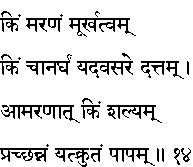
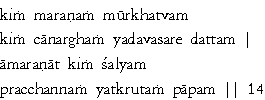

|

|
Verse 14 - Meaning:
Q: What is Death ? (kim maranam)
A: Utter ignorance.
Q: What is it that is beyond all evaluation ?
A: The gift that is given to a person who is in need and at the time of need.
Q: What causes torment till death ?
A: Sins committed by one but guarded by a veil of secrecy. (undisclosed sins)
|